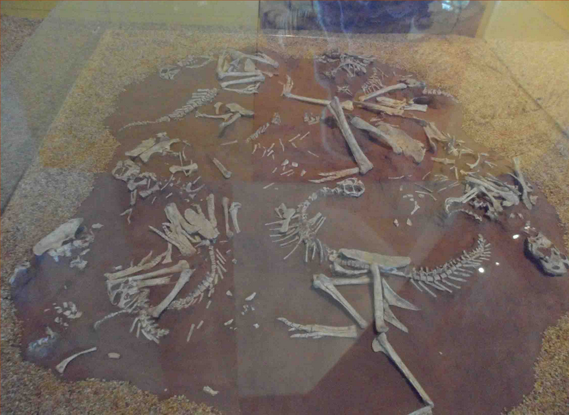

竊蛋龍

屬於腔尾龍類一員的竊蛋龍，是一種善於奔跑的二足小型恐龍。牠最明顯的特徵是頭部短；而且頭上還有一高聳的骨質頭冠，非常的突出。
此外，竊蛋龍的嘴喙是沒有牙齒，取而代之是強而有力的喙和下顎，作用和現生鸚鵡的喙差不多。 至於牠的前肢有著典型獸足類的利爪，從牠們的化石胃含物中，也常發現一些小型的脊椎動物，因此牠們應該也是肉食性的。
牠們主要分佈在蒙古的戈壁沙漠，生活年代為晚白堊紀。
屬於腔尾龍類一員的竊蛋龍，是一種善於奔跑的二足小型恐龍。牠最明顯的特徵是頭部短；而且頭上還有一高聳的骨質頭冠，非常的突出。
此外，竊蛋龍的嘴喙是沒有牙齒，取而代之是強而有力的喙和下顎，作用和現生鸚鵡的喙差不多。 至於牠的前肢有著典型獸足類的利爪，從牠們的化石胃含物中，也常發現一些小型的脊椎動物，因此牠們應該也是肉食性的。
牠們主要分佈在蒙古的戈壁沙漠，生活年代為晚白堊紀。